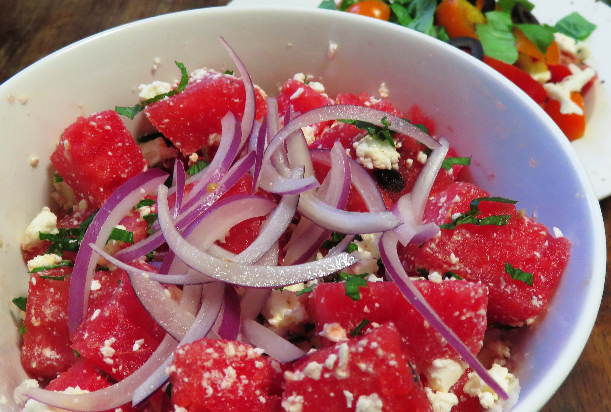

Watermelon Salad

Description
This watermelon salad is a surprising yet delicious combination of sweet watermelon, red onion, cucumber, and salty feta cheese. It makes the perfect summer party side dish.
Ingredients
- 1 cup sliced red onion, cut lengthwise
- 3 tablespoons lime juice
- 15 cups cubed watermelon
- 3 cups cubed cucumber
- 8 ounce feta cheese, crumbled
- 1/2 cup chopped fresh cilantro/li>
- cracked black pepper, to taste
- sea salt, to taste
Steps
- Place red onion slices in a small bowl; pour over lime juice. Allow onions to marinate while assembling the salad.
- Gently combine watermelon, cucumber, feta cheese, and cilantro in a large bowl; season with black pepper.
- Toss watermelon salad with marinated onions and season with sea salt just before serving.
- Serve and enjoy!